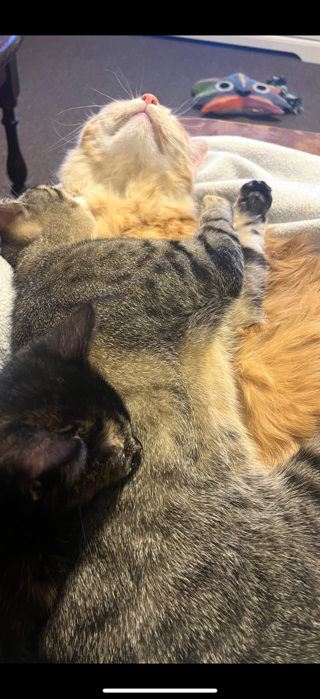
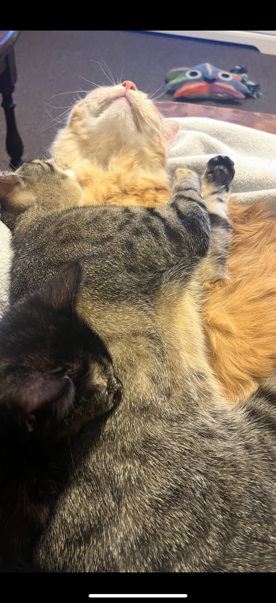

Pets
I am a cat dad for sure, but I also have a lovely red-eared slider.

Pronouns: He/Him
Hello! I'm Malik, and I am so thankful to get the chance to tell you about myself.
I am a cat dad for sure, but I also have a lovely red-eared slider.

I chose Atlas because I want to get into big tech, in a community that is still young and growing with opportunity.
With the skills I acquire through Atlas, I aim to do work at a tech company while doing freelancing to support smaller businesses or even start-ups.